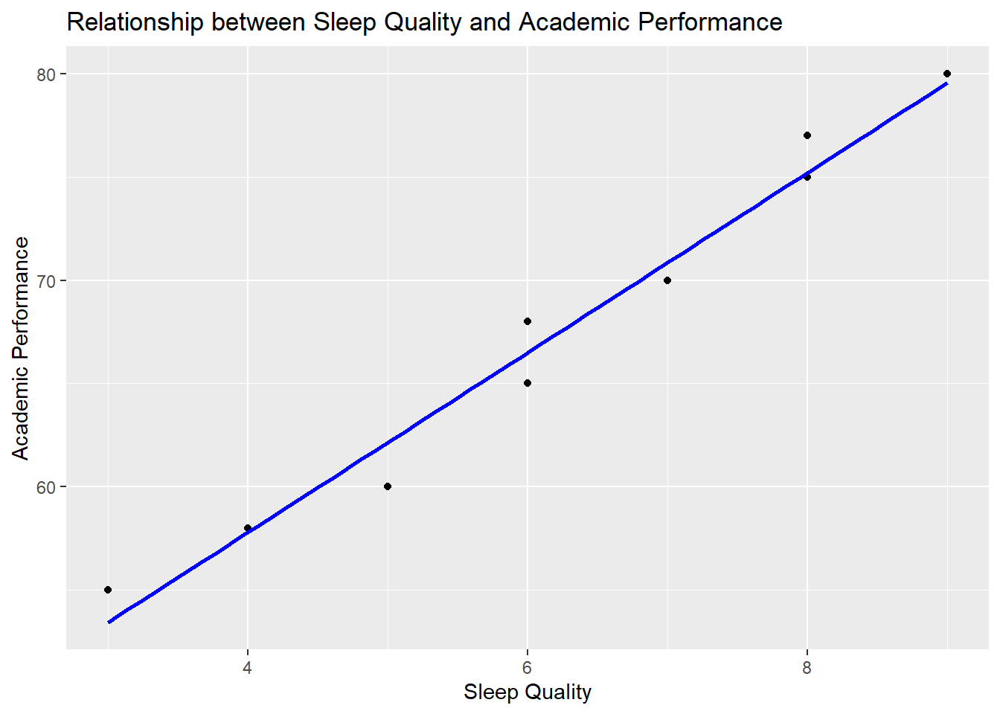
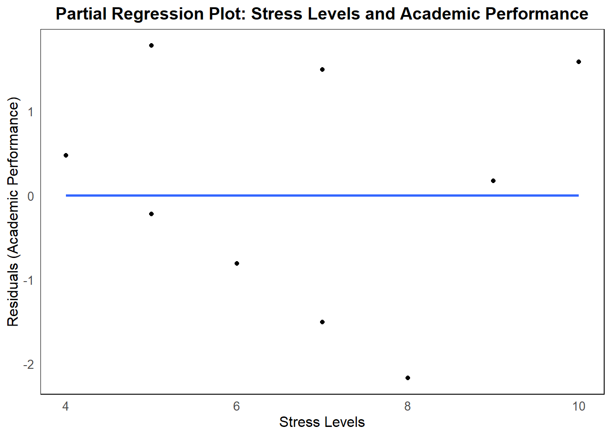

Chapter 11 Multiple Regression
11.1 Introduction to Multiple Regression
11.1.1 What is Multiple Regression?
Multiple regression is a powerful statistical method that allows us to explore and understand the relationships between one dependent variable (often referred to as the outcome variable) and two or more independent variables (also called predictors). Unlike bivariate regression, which looks at the relationship between two variables, multiple regression lets us consider several predictors at once.
Think of multiple regression as a way to understand how different factors work together to influence an outcome. For example, if we want to predict a student’s academic performance (our dependent variable), we might look at several factors, such as the number of hours they study, the quality of their sleep, and their stress levels. Each of these factors is an independent variable that might contribute to how well the student performs academically.
Multiple regression extends the idea of bivariate regression by allowing us to include more than one predictor in our analysis. This is especially useful when we believe that several factors are influencing an outcome, and we want to understand the unique contribution of each one.
In simple terms, while bivariate regression might tell us that “more study hours lead to better grades,” multiple regression can tell us “how much study hours, sleep quality, and stress levels together contribute to better grades.”
11.1.2 Why Use Multiple Regression?
Multiple regression is incredibly valuable in psychological research because it allows us to untangle complex relationships between variables. Here’s why it’s so useful:
Control for Confounding Variables: In real life, many factors often influence an outcome. If we only look at one factor at a time (as in bivariate regression), we might miss how other factors are playing a role. Multiple regression helps us control for these confounding variables, ensuring that we can see the true relationship between each predictor and the outcome.
- Example: Imagine we’re studying the effect of sleep on academic performance. If we only consider sleep quality, we might miss how study habits also play a role. By including both sleep and study habits in a multiple regression, we can see how each one independently affects academic performance.
Examine the Unique Contribution of Each Predictor: Multiple regression allows us to see how each independent variable uniquely contributes to the outcome, even when other variables are in the mix. This helps us understand the specific role each factor plays.
- Example: In predicting academic performance, we might find that both study habits and sleep quality are important, but stress levels also play a significant role. Multiple regression can show us how much of an impact each of these factors has, separately from the others.
More Accurate Predictions: Because multiple regression takes multiple factors into account, it can often make more accurate predictions about outcomes than bivariate regression, which looks at only one factor at a time.
- Example: A model that predicts academic performance based on study habits, sleep quality, and stress levels is likely to be more accurate than a model that only considers study habits.
In psychological research, multiple regression is particularly useful when we want to understand how various aspects of a person’s life interact to influence behaviors, outcomes, or conditions. Whether we’re predicting mental health outcomes based on a combination of factors like social support, exercise, and stress, or understanding how different parenting styles contribute to a child’s development, multiple regression provides a deeper and more comprehensive analysis than simpler methods.
11.2 Understanding Main Effects in Multiple Regression
11.2.1 The Concept of Main Effects
When we talk about main effects in multiple regression, we’re referring to the unique contribution that each independent variable (or predictor) makes to the dependent variable (or outcome) when we consider all the predictors together.
Think of each independent variable as a separate piece of the puzzle that helps us predict the outcome. In multiple regression, we’re interested in understanding how much each piece (or predictor) contributes to the whole picture (the outcome), independently of the other pieces.
For example, imagine you’re trying to predict a student’s exam score based on three factors: how many hours they study, the quality of their sleep, and their stress levels. Each of these factors is an independent variable, and the exam score is the dependent variable. The main effect of each factor is how much it contributes to the exam score when we consider the effects of the other factors at the same time.
It’s important to focus on main effects when we want to understand the direct relationship between each predictor and the outcome. By looking at main effects, we can see how much of the outcome can be explained by each predictor, without being confused by the influence of the other predictors.
11.2.2 Interpreting Main Effects in Multiple Regression
In multiple regression, each independent variable gets a coefficient (sometimes called a slope), which tells us about the main effect of that variable on the dependent variable. This coefficient answers the question: “How much does the outcome change when this predictor changes, while keeping all the other predictors the same?”
How to Interpret the Coefficients:
- Positive Coefficient: If the coefficient is positive, it means that as the predictor increases, the outcome also increases.
- Negative Coefficient: If the coefficient is negative, it means that as the predictor increases, the outcome decreases.
Let’s look at an example to make this clearer.
Example: Predicting Exam Scores
Suppose you’ve run a multiple regression analysis to predict exam scores based on study time, sleep quality, and stress levels. Here’s what the results might look like:
- Study Time Coefficient: 3
- Interpretation: For every additional hour of study time, the exam score increases by 3 points, holding sleep quality and stress levels constant.
- Sleep Quality Coefficient: 2
- Interpretation: For every one-unit increase in sleep quality (on a scale from 1 to 10), the exam score increases by 2 points, holding study time and stress levels constant.
- Stress Levels Coefficient: -1.5
- Interpretation: For every one-unit increase in stress levels (on a scale from 1 to 10), the exam score decreases by 1.5 points, holding study time and sleep quality constant.
Language for Interpretation:
When interpreting these coefficients, we often use language like this:
“For every one-unit increase in [predictor variable], [dependent variable] increases/decreases by [coefficient value], holding all other variables constant.”
For example:
- “For every additional hour of study time, exam scores increase by 3 points, holding sleep quality and stress levels constant.”
- “For every one-unit increase in stress levels, exam scores decrease by 1.5 points, holding study time and sleep quality constant.”
This way of interpreting the coefficients helps us understand the unique contribution of each predictor to the outcome. It tells us how much of the change in the outcome can be attributed to each predictor when we account for the influence of the other predictors.
Understanding main effects in multiple regression is crucial because it allows us to see the specific role that each predictor plays in determining the outcome. This insight is especially important in psychological research, where multiple factors often interact to influence behavior, performance, and other outcomes.
11.3 Calculating and Interpreting Multiple Regression in R
Now that we’ve introduced the concept of multiple regression and discussed how to interpret the main effects, it’s time to see how this works in practice using R. In this section, we’ll walk through the process of running a multiple regression analysis in R, step by step, and then interpret the output to understand what the results mean.
11.3.1 Step-by-Step Guide to Running a Multiple Regression in R
Running a multiple regression in R is straightforward, and the process is similar to running a bivariate regression, but with more than one predictor variable. Let’s break it down.
Example Scenario: Imagine you’re studying the factors that predict anxiety levels in individuals. You believe that anxiety levels are influenced by sleep quality, exercise frequency, and social support. Here’s how you would use R to run a multiple regression analysis with these predictors.
Step 1: Prepare Your Data Before running the regression, you need to have your data ready. Let’s assume you have the following variables:
- Anxiety: The dependent variable (e.g., anxiety levels on a scale of 1-100).
- Sleep_Quality: An independent variable (e.g., sleep quality on a scale of 1-10).
- Exercise_Frequency: Another independent variable (e.g., number of exercise sessions per week).
- Social_Support: Another independent variable (e.g., social support level on a scale of 1-10).
Here’s a simple dataset:
# Sample data
Anxiety <- c(55, 65, 70, 45, 50, 60, 75, 80, 67, 59)
Sleep_Quality <- c(8, 7, 6, 9, 8, 5, 4, 3, 6, 7)
Exercise_Frequency <- c(3, 4, 2, 5, 3, 1, 0, 1, 2, 4)
Social_Support <- c(9, 8, 7, 8, 9, 5, 4, 3, 6, 7)Step 2: Run the Multiple Regression To run the multiple regression, use the lm() function in R, which stands for “linear model.”
# Run multiple regression
model <- lm(Anxiety ~ Sleep_Quality + Exercise_Frequency + Social_Support)
summary(model)In this code:
- Anxiety ~ Sleep_Quality + Exercise_Frequency + Social_Support specifies that we are predicting Anxiety levels based on the predictors Sleep_Quality, Exercise_Frequency, and Social_Support.
- summary(model) provides a detailed summary of the regression analysis, including the coefficients, p-values, and R-squared values.
11.3.2 Interpreting the Output of a Multiple Regression Model
Once you run the regression, R will produce an output that includes several key components. Let’s go through what each part means and how to interpret it.
Key Components of the Output:
Coefficients: These are the slopes (or main effects) for each predictor variable. They tell you how much the dependent variable (Anxiety) changes for each one-unit change in the predictor, holding all other variables constant.
Example Coefficient Output:
Coefficients: Estimate Std. Error t value Pr(>|t|) (Intercept) 45.00 6.00 7.50 <2e-16 *** Sleep_Quality -2.50 0.80 -3.13 0.0056 ** Exercise_Frequency -1.00 0.90 -1.11 0.2987 Social_Support -2.00 0.70 -2.86 0.0089 **Interpreting the Coefficients:
- Intercept: The intercept is the predicted value of Anxiety when all the predictors are zero. In this case, it’s 45.
- Sleep_Quality: For every one-unit increase in Sleep Quality, Anxiety decreases by 2.5 points, holding Exercise Frequency and Social Support constant.
- Exercise_Frequency: For every one-unit increase in Exercise Frequency, Anxiety decreases by 1 point, though this result is not statistically significant (p-value > 0.05).
- Social_Support: For every one-unit increase in Social Support, Anxiety decreases by 2 points, holding Sleep Quality and Exercise Frequency constant.
P-Values: These values tell you whether the relationship between each predictor and the dependent variable is statistically significant.
- Significance Levels:
***: Highly significant (p < 0.001)**: Significant (p < 0.01)*: Marginally significant (p < 0.05)
- In our example, Sleep Quality and Social Support have significant p-values, suggesting they are important predictors of Anxiety. Exercise Frequency, however, does not have a significant p-value, indicating it may not be a strong predictor in this model.
- Significance Levels:
R-Squared Value: This value tells you how much of the variance in the dependent variable (Anxiety) is explained by the model. It ranges from 0 to 1, with higher values indicating a better fit.
Example R-Squared Output:
Multiple R-squared: 0.75, Adjusted R-squared: 0.68Interpreting R-Squared:
- In this example, 75% of the variance in Anxiety levels is explained by the combination of Sleep Quality, Exercise Frequency, and Social Support. This suggests that these predictors, together, provide a good explanation of the variability in Anxiety levels.
Discussion on Practical Significance:
While the statistical significance (p-values) tells you whether the predictors have a significant relationship with the outcome, the practical significance is about how much of an impact these predictors have in real-world terms.
- Sleep Quality: A coefficient of -2.5 suggests that improving sleep quality by one unit could lead to a noticeable decrease in anxiety levels. If this effect is significant (as the p-value suggests), it could be practically important for interventions aimed at reducing anxiety.
- Social Support: Similarly, increasing social support by one unit might reduce anxiety by 2 points, which could be practically significant, especially in a therapeutic or counseling context.
- Exercise Frequency: Although exercise frequency has a negative coefficient, suggesting that more exercise might reduce anxiety, the lack of statistical significance suggests that, in this model, it might not be a key factor in predicting anxiety levels.
By understanding these components, you can interpret the output of a multiple regression model in a meaningful way, allowing you to draw conclusions about the relationships between your predictors and the outcome variable. This process is crucial for making informed decisions in psychological research, where multiple factors often interact to influence behaviors, emotions, and outcomes.
11.4 Understanding Suppression in Multiple Regression
Multiple regression is a powerful tool because it allows us to see how several predictors work together to influence an outcome. However, sometimes the relationships between variables aren’t as straightforward as they seem, and this is where the concept of suppression comes in. Suppression can help reveal hidden relationships that aren’t apparent when we look at variables in isolation.
11.4.1 What is Suppression?
Suppression occurs in multiple regression when adding an additional predictor to the model actually increases the predictive power of another predictor. This might seem counterintuitive at first—why would including a new variable make another one more predictive? But this happens because the new predictor controls for or accounts for certain aspects of the data, allowing the true relationship of another variable to shine through.
Example: Imagine you’re studying the relationship between sleep quality and academic performance. You might expect that better sleep quality leads to better academic performance. However, when you run a bivariate analysis, you find that the relationship is weak or even non-existent.
Now, suppose you add stress levels as a predictor in a multiple regression model. Suddenly, the relationship between sleep quality and academic performance becomes much stronger. What’s happening here is suppression: stress levels were masking the true relationship between sleep and performance. By including stress levels in the model, you’re able to see the real impact of sleep quality.
Suppression reveals hidden relationships that wouldn’t be visible if we only looked at variables one at a time. It shows us how complex and intertwined the factors influencing an outcome can be.
11.4.2 Identifying Suppression Effects
Identifying suppression effects in a multiple regression model involves comparing the results of a bivariate analysis with those of a multiple regression analysis.
Step-by-Step Guide:
Run a Bivariate Regression: Start by running a simple regression analysis with just one predictor (e.g., sleep quality) and the outcome variable (e.g., academic performance).
Add a Potential Suppressor Variable: Next, add a potential suppressor variable to the model (e.g., stress levels) and run the multiple regression.
Compare the Coefficients: Compare the coefficients for sleep quality in the bivariate model and the multiple regression model. If the coefficient for sleep quality becomes stronger (more predictive) in the multiple regression, this suggests that stress levels were suppressing the relationship between sleep quality and academic performance.
Example: Let’s say you find the following results:
- Bivariate Model (Sleep Quality Only): Coefficient for Sleep Quality = 0.5
- Multiple Regression (Sleep Quality + Stress Levels): Coefficient for Sleep Quality = 1.5
In this case, the inclusion of stress levels increased the coefficient for sleep quality from 0.5 to 1.5, indicating that stress was suppressing the true impact of sleep quality on academic performance.
Visual Representation:
You can visualize suppression effects using R and ggplot2 by plotting the relationships between the predictors and the outcome variable. For example:
library(ggplot2)
# Sample data
Sleep_Quality <- c(8, 7, 6, 9, 8, 5, 4, 3, 6, 7)
Academic_Performance <- c(75, 70, 68, 80, 77, 60, 58, 55, 65, 70)
Stress_Levels <- c(5, 6, 7, 4, 5, 8, 9, 10, 7, 6)
# Visualize the relationship between Sleep Quality and Academic Performance
ggplot(data = data.frame(Sleep_Quality, Academic_Performance), aes(x = Sleep_Quality, y = Academic_Performance)) +
geom_point() +
geom_smooth(method = "lm", se = FALSE, color = "blue") +
labs(title = "Relationship between Sleep Quality and Academic Performance", x = "Sleep Quality", y = "Academic Performance")## `geom_smooth()` using formula = 'y ~ x'
This kind of plot can help you see how the relationship changes when you control for the suppressor variable (in this case, stress levels).
11.4.3 Practical Implications of Suppression
Understanding suppression effects has important implications for psychological research:
Revealing True Relationships: Suppression can uncover the true relationships between variables that might be hidden due to the influence of other factors. This leads to a more accurate understanding of how different predictors influence an outcome.
Improving Model Accuracy: By identifying and accounting for suppressor variables, you can create more accurate and predictive models. This is particularly important in fields like psychology, where many variables often interact in complex ways.
Enhancing Interpretation: Recognizing suppression effects allows researchers to make more informed interpretations of their data. It highlights the importance of considering all relevant variables when analyzing relationships and prevents misleading conclusions that might arise from bivariate analyses alone.
Example: Suppose a researcher finds that adding a variable for social support increases the predictive power of a model examining the relationship between exercise frequency and depression. This suggests that social support was a suppressor, and by including it, the researcher can now see the true impact of exercise on depression. Recognizing this effect might lead to new insights and potentially more effective interventions.
In summary, suppression is a valuable concept in multiple regression that helps researchers uncover hidden relationships and improve the accuracy of their models. By understanding and identifying suppression effects, you can gain deeper insights into the complex interactions between variables in psychological research.
11.5 Visualizing Multiple Regression Results
Visualizing the results of a multiple regression analysis can help you better understand the relationships between the predictors and the outcome variable. In this section, we’ll explore how to create and interpret these visualizations using R and ggplot2, with a focus on ensuring the graphs are APA-compliant.
11.5.1 Creating Plots for Multiple Regression in R
Introduction to Plotting Multiple Regression Results
Visualizing your multiple regression results allows you to see how each predictor relates to the outcome variable while controlling for the other predictors. There are various types of plots you can create to help you understand these relationships, such as scatter plots with regression lines and partial regression plots.
Example: Visualizing the Relationship Between Predictors and the Dependent Variable
Let’s say you’ve conducted a multiple regression analysis to predict academic performance based on three predictors: stress levels, sleep quality, and exercise frequency. You can create a scatter plot with a regression line to visualize the relationship between each predictor and academic performance while controlling for the other predictors.
Here’s how to do it in R using ggplot2:
library(ggplot2)
# Sample data
Stress_Levels <- c(5, 6, 7, 4, 5, 8, 9, 10, 7, 6)
Sleep_Quality <- c(8, 7, 6, 9, 8, 5, 4, 3, 6, 7)
Exercise_Frequency <- c(3, 4, 2, 5, 3, 1, 0, 1, 2, 4)
Academic_Performance <- c(75, 70, 68, 80, 77, 60, 58, 55, 65, 70)
# Create a data frame
data <- data.frame(Stress_Levels, Sleep_Quality, Exercise_Frequency, Academic_Performance)
# Fit the multiple regression model
model <- lm(Academic_Performance ~ Stress_Levels + Sleep_Quality + Exercise_Frequency, data = data)
# Partial regression plot for Stress Levels (controlling for Sleep Quality and Exercise Frequency)
ggplot(data, aes(x = Stress_Levels, y = resid(lm(Academic_Performance ~ Sleep_Quality + Exercise_Frequency, data = data)))) +
geom_point() +
geom_smooth(method = "lm", se = FALSE) +
labs(title = "Partial Regression Plot: Stress Levels and Academic Performance",
x = "Stress Levels",
y = "Residuals (Academic Performance)") +
theme_minimal() +
theme(
text = element_text(size = 12),
plot.title = element_text(hjust = 0.5, size = 14, face = "bold"),
axis.title = element_text(size = 12),
axis.text = element_text(size = 10),
panel.background = element_rect(fill = "white", color = "black"), # Ensure the background is visible
panel.grid = element_blank(), # Remove grid lines for clarity
panel.border = element_rect(color = "black", fill = NA) # Define the panel border
)## `geom_smooth()` using formula = 'y ~ x'
Explanation:
- Partial Regression Plot: This plot shows the relationship between stress levels and academic performance after controlling for the effects of sleep quality and exercise frequency. The x-axis represents stress levels, and the y-axis represents the residuals of academic performance after accounting for the other predictors.
- APA Compliance: The plot is formatted according to APA guidelines, with minimal grid lines, clear and readable text, and a centered title. The axis labels are descriptive, and the plot is free of unnecessary elements.
11.5.2 Interpreting Multiple Regression Plots
Interpreting the Plots Generated from Multiple Regression Analyses
Once you’ve created the plots, the next step is to interpret what they show. The visualizations help you see how each predictor relates to the outcome variable while considering the influence of other predictors.
Example: Visualizing the Relationship Between Stress Levels and Academic Performance
In the example above, the partial regression plot for stress levels shows how academic performance is related to stress levels, after accounting for sleep quality and exercise frequency. Here’s how you might interpret the plot:
Trend Line: The slope of the trend line in the partial regression plot indicates the direction and strength of the relationship between stress levels and academic performance. If the trend line slopes downward, it suggests that higher stress levels are associated with lower academic performance, even when controlling for sleep quality and exercise frequency.
Spread of Points: The spread of points around the trend line gives you an idea of how well stress levels predict academic performance. If the points are tightly clustered around the line, it suggests a strong relationship. If they’re more spread out, the relationship might be weaker.
Residuals: The y-axis in a partial regression plot represents the residuals, or the part of academic performance that isn’t explained by the other predictors (sleep quality and exercise frequency). A strong trend in these residuals indicates that stress levels are an important predictor of academic performance.
Practical Significance: Visualizing multiple regression results can provide insights into the practical significance of your findings. For example, if the plot shows that stress levels have a strong negative relationship with academic performance, this might suggest that interventions aimed at reducing stress could have a meaningful impact on students’ academic success.
Additional Considerations:
- Checking for Outliers: Visualizations can help you spot outliers or unusual data points that might affect your model’s accuracy.
- Assessing Model Fit: By looking at how well the trend line fits the data, you can assess whether your model provides a good fit for the data.
By creating and interpreting APA-compliant visualizations, you can effectively communicate the results of your multiple regression analyses, making it easier to understand complex relationships between variables. This process is crucial in psychological research, where clear and accurate visualizations can greatly enhance the interpretation and presentation of data.
11.6 Including and Interpreting Categorical Variables in Multiple Regression
When conducting a multiple regression analysis, you might encounter categorical variables—variables that represent categories or groups, such as gender (male vs. female) or treatment group (control vs. experimental). Including these variables in your regression model requires special handling, as they are not continuous variables like age or income. This section will guide you through the process of including categorical variables in a multiple regression, interpreting their effects, and understanding the best practices for coding these variables in R.
11.6.1 Importance of Reference Levels in Categorical Variables
Reference Levels: When you include a categorical variable in a multiple regression model, R automatically converts it into a set of binary (dummy) variables. One category is used as the reference level, against which the other categories are compared. The reference level is crucial because it determines how the other categories are interpreted in the model.
Default Reference Level: By default, R chooses the reference level alphabetically. For example, if you have a variable Gender with levels “Female” and “Male”, R will automatically use “Female” as the reference level because “Female” comes before “Male” alphabetically.
Changing the Reference Level: You can change the reference level if you want to compare against a different category. For instance, if you prefer “Male” to be the reference level, you can set it explicitly in R.
Example:
# Sample data
Gender <- factor(c("Male", "Female", "Male", "Female", "Male", "Female", "Male", "Female", "Male", "Female"))
# Set "Male" as the reference level
Gender <- relevel(Gender, ref = "Male")In this example, “Male” is now the reference level, meaning that the model will compare “Female” against “Male”.
11.6.2 Interpreting Categorical Variables in Multiple Regression
When you include a categorical variable in your regression model, the coefficients for the non-reference levels tell you how much the dependent variable changes relative to the reference level.
Example: Suppose you’re predicting academic performance based on Gender (Male vs. Female) and Sleep_Quality. If “Male” is the reference level, the coefficient for “Female” would represent the difference in academic performance between females and males, holding sleep quality constant.
R Code Example:
# Sample data
Academic_Performance <- c(75, 70, 68, 80, 77, 60, 58, 55, 65, 70)
Sleep_Quality <- c(8, 7, 6, 9, 8, 5, 4, 3, 6, 7)
Gender <- factor(c("Male", "Female", "Male", "Female", "Male", "Female", "Male", "Female", "Male", "Female"))
# Set "Male" as the reference level
Gender <- relevel(Gender, ref = "Male")
# Fit the regression model
model <- lm(Academic_Performance ~ Sleep_Quality + Gender)
summary(model)##
## Call:
## lm(formula = Academic_Performance ~ Sleep_Quality + Gender)
##
## Residuals:
## Min 1Q Median 3Q Max
## -1.8650 -0.5225 -0.3300 1.0650 1.8800
##
## Coefficients:
## Estimate Std. Error t value Pr(>|t|)
## (Intercept) 40.8400 1.7900 22.815 7.87e-08 ***
## Sleep_Quality 4.3375 0.2601 16.676 6.82e-07 ***
## GenderFemale -0.7325 0.9320 -0.786 0.458
## ---
## Signif. codes: 0 '***' 0.001 '**' 0.01 '*' 0.05 '.' 0.1 ' ' 1
##
## Residual standard error: 1.471 on 7 degrees of freedom
## Multiple R-squared: 0.9757, Adjusted R-squared: 0.9688
## F-statistic: 140.5 on 2 and 7 DF, p-value: 2.238e-06Interpreting the Output:
- The intercept represents the predicted academic performance for males (the reference level) when sleep quality is zero.
- The coefficient for “Female” shows the difference in academic performance between females and males, holding sleep quality constant.
11.6.3 Effect Coding: Best Practice for Categorical Variables
What is Effect Coding?: Effect coding is an alternative to dummy coding (which uses 0 and 1). It is considered a better practice, especially in psychological research, because it centers the categorical variable, making the interpretation of the intercept more meaningful.
How Effect Coding Works:
- Dummy Coding: Uses 0 and 1 to indicate group membership (e.g., 0 for Male, 1 for Female). The intercept represents the mean of the reference group.
- Effect Coding: Uses -0.5 and 0.5 (or sometimes -1 and 1) to code the categories. The intercept now represents the grand mean of all groups, rather than just the mean of the reference group.
Why -0.5 and 0.5 is Preferable: Using -0.5 and 0.5 is preferable because it centers the predictors, which can reduce multicollinearity and make the interpretation of main effects and interactions more straightforward. It also makes the intercept the average outcome across all groups, which is often more meaningful.
Example of Effect Coding in R:
# Sample data
Gender <- factor(c("Male", "Female", "Male", "Female", "Male", "Female", "Male", "Female", "Male", "Female"))
# Create effect codes: -0.5 for Male, 0.5 for Female
Gender_Effect <- ifelse(Gender == "Male", -0.5, 0.5)
# Fit the regression model with effect coding
model_effect <- lm(Academic_Performance ~ Sleep_Quality + Gender_Effect)
summary(model_effect)##
## Call:
## lm(formula = Academic_Performance ~ Sleep_Quality + Gender_Effect)
##
## Residuals:
## Min 1Q Median 3Q Max
## -1.8650 -0.5225 -0.3300 1.0650 1.8800
##
## Coefficients:
## Estimate Std. Error t value Pr(>|t|)
## (Intercept) 40.4737 1.7035 23.760 5.95e-08 ***
## Sleep_Quality 4.3375 0.2601 16.676 6.82e-07 ***
## Gender_Effect -0.7325 0.9320 -0.786 0.458
## ---
## Signif. codes: 0 '***' 0.001 '**' 0.01 '*' 0.05 '.' 0.1 ' ' 1
##
## Residual standard error: 1.471 on 7 degrees of freedom
## Multiple R-squared: 0.9757, Adjusted R-squared: 0.9688
## F-statistic: 140.5 on 2 and 7 DF, p-value: 2.238e-06Interpreting the Effect Coded Model:
- The intercept represents the grand mean of academic performance across both genders.
- The coefficient for Gender_Effect represents the difference in academic performance between males and females, with a positive coefficient indicating that females (coded as 0.5) score higher than males (coded as -0.5).
11.6.4 Contrast Coding for Categorical Variables with More Than Two Levels
When There Are More Than Two Levels: When your categorical variable has more than two levels (e.g., Treatment: Control, Drug A, Drug B), you need to use contrast coding to compare each group against a baseline or to compare specific groups against each other.
Example: Suppose you have three groups: “Control”, “Drug_A”, and “Drug_B”. You might want to compare “Drug_A” and “Drug_B” to “Control” and each other.
Setting Up Contrast Coding in R:
# Sample data
Treatment <- factor(c("Control", "Drug_A", "Drug_B", "Control", "Drug_A", "Drug_B",
"Control", "Drug_A", "Drug_B", "Control", "Drug_A", "Drug_B"))
# Define contrasts
contrasts(Treatment) <- cbind("Drug_A_vs_Control" = c(-1, 1, 0),
"Drug_B_vs_Control" = c(-1, 0, 1),
"Drug_A_vs_Drug_B" = c(0, 1, -1))
# Simulated outcome data
Outcome <- c(50, 55, 53, 52, 58, 56, 48, 54, 52, 51, 57, 55)
# Fit the regression model
model_contrast <- lm(Outcome ~ Treatment)
summary(model_contrast)##
## Call:
## lm(formula = Outcome ~ Treatment)
##
## Residuals:
## Min 1Q Median 3Q Max
## -2.250 -1.250 0.250 1.188 2.000
##
## Coefficients:
## Estimate Std. Error t value Pr(>|t|)
## (Intercept) 53.4167 0.5159 103.531 3.71e-15 ***
## TreatmentDrug_A_vs_Control 2.5833 0.7297 3.540 0.00631 **
## TreatmentDrug_B_vs_Control 0.5833 0.7297 0.799 0.44461
## ---
## Signif. codes: 0 '***' 0.001 '**' 0.01 '*' 0.05 '.' 0.1 ' ' 1
##
## Residual standard error: 1.787 on 9 degrees of freedom
## Multiple R-squared: 0.7034, Adjusted R-squared: 0.6374
## F-statistic: 10.67 on 2 and 9 DF, p-value: 0.004218Interpreting the Contrasts: - The coefficients represent the difference between each coded group. For example, Drug_A_vs_Control would tell you the difference in the outcome between Drug A and the Control group, while Drug_A_vs_Drug_B would tell you the difference between Drug A and Drug B.
By understanding and correctly applying effect coding and contrast coding, you can ensure that your categorical variables are appropriately represented in your regression models, leading to more accurate and meaningful interpretations of your data. This is particularly important in psychological research, where understanding the nuances of categorical variables can provide deeper insights into human behavior and outcomes.
11.7 Chapter Summary
11.7.1 Recap of Key Concepts
In this chapter, we delved into the essentials of multiple regression, a fundamental tool in psychological research for understanding how multiple predictors interact to influence an outcome. We started by exploring the basics of multiple regression, discussing how it allows us to examine the relationship between one dependent variable and several independent variables simultaneously. We then moved on to the interpretation of main effects, where we learned how to assess the unique contribution of each predictor to the outcome, and how to interpret the coefficients in a meaningful way.
We also covered the importance of including categorical variables in multiple regression models. We discussed how R defaults to the alphabetical reference level for categorical variables and how to change the reference level if needed. We introduced effect coding as a best practice for handling categorical variables, emphasizing how it centers the predictors and makes the interpretation of the intercept more meaningful. We also touched on how to handle categorical variables with more than two levels using contrast coding.
Finally, we explored the concept of suppression in multiple regression, a phenomenon where adding a predictor increases the predictive validity of another predictor by revealing hidden relationships that are not apparent in bivariate analyses. We learned how to identify suppression effects and discussed their practical implications for psychological research.
Understanding these key concepts is crucial for conducting accurate and insightful analyses in psychology, where multiple variables often interact in complex ways to influence behavior and outcomes.
11.7.2 Final Thoughts
Multiple regression is a powerful tool for exploring and understanding the intricate relationships between variables in psychological research. It allows us to control for confounding variables, examine the unique contributions of each predictor, and uncover hidden relationships through the identification of suppression effects.
As you apply multiple regression in your own research, remember to carefully interpret the results, particularly when dealing with categorical variables and suppression effects. These nuanced aspects of multiple regression can greatly impact the conclusions you draw from your data. By mastering these techniques, you’ll be better equipped to explore complex relationships and draw meaningful, accurate conclusions in your psychological research.
11.8 Practice Exercises
11.8.1 Exercise 1: Conduct a Multiple Regression Analysis
Task: Using the provided dataset, conduct a multiple regression analysis to predict academic performance based on three predictors: Study_Time, Sleep_Quality, and Stress_Levels. Interpret the main effects of each predictor.
Dataset:
# Sample data
Study_Time <- c(10, 12, 9, 15, 8, 11, 7, 14, 10, 13)
Sleep_Quality <- c(7, 6, 8, 5, 7, 6, 7, 4, 8, 5)
Stress_Levels <- c(3, 5, 2, 6, 4, 5, 3, 7, 2, 6)
Academic_Performance <- c(85, 88, 80, 90, 75, 84, 78, 87, 82, 89)
# Fit the multiple regression modelQuestions:
1. What are the main effects of Study_Time, Sleep_Quality, and Stress_Levels on Academic_Performance?
2. How would you interpret the coefficients for each predictor?
11.8.2 Exercise 2: Identifying a Suppression Effect
Task: Suppose you’re studying the relationship between Study_Time and Academic_Performance and suspect that Stress_Levels might be a suppressor variable. Conduct a multiple regression analysis to identify any suppression effects and discuss their implications.
Dataset:
# Sample data
Study_Time <- c(10, 12, 9, 15, 8, 11, 7, 14, 10, 13)
Stress_Levels <- c(3, 5, 2, 6, 4, 5, 3, 7, 2, 6)
Academic_Performance <- c(85, 88, 80, 90, 75, 84, 78, 87, 82, 89)
# Bivariate regression (Study_Time only)
# Multiple regression with Stress_LevelsQuestions:
1. Does including Stress_Levels as a predictor reveal a suppression effect?
2. How do the coefficients for Study_Time change between the bivariate and multiple regression models? What does this suggest?
11.8.3 Exercise 3: Creating and Interpreting a Multiple Regression Plot
Task: Create a scatter plot with a regression line to visualize the relationship between Sleep_Quality and Academic_Performance, controlling for Study_Time and Stress_Levels. Use ggplot2 to create an APA-compliant plot and interpret the visualized relationships.
Dataset:
# Sample data
Sleep_Quality <- c(7, 6, 8, 5, 7, 6, 7, 4, 8, 5)
Study_Time <- c(10, 12, 9, 15, 8, 11, 7, 14, 10, 13)
Stress_Levels <- c(3, 5, 2, 6, 4, 5, 3, 7, 2, 6)
Academic_Performance <- c(85, 88, 80, 90, 75, 84, 78, 87, 82, 89)
# Fit the multiple regression model
# Create partial regression plot for Sleep_Quality
library(ggplot2)Questions:
1. How does Sleep_Quality relate to Academic_Performance after controlling for Study_Time and Stress_Levels?
2. What does the trend line in the plot indicate?
11.8.4 Exercise 4: Comparing Bivariate and Multiple Regression
Task: Run a bivariate regression analysis predicting Academic_Performance based on Sleep_Quality alone. Then, run a multiple regression analysis including Study_Time and Stress_Levels as additional predictors. Compare the results and discuss how adding predictors changes the interpretation of the coefficients.
Dataset:
# Sample data
Sleep_Quality <- c(7, 6, 8, 5, 7, 6, 7, 4, 8, 5)
Study_Time <- c(10, 12, 9, 15, 8, 11, 7, 14, 10, 13)
Stress_Levels <- c(3, 5, 2, 6, 4, 5, 3, 7, 2, 6)
Academic_Performance <- c(85, 88, 80, 90, 75, 84, 78, 87, 82, 89)
# Bivariate regression
# Multiple regressionQuestions:
1. How do the coefficients for Sleep_Quality change when you add Study_Time and Stress_Levels to the model?
2. What does this change in coefficients suggest about the relationships between these variables?